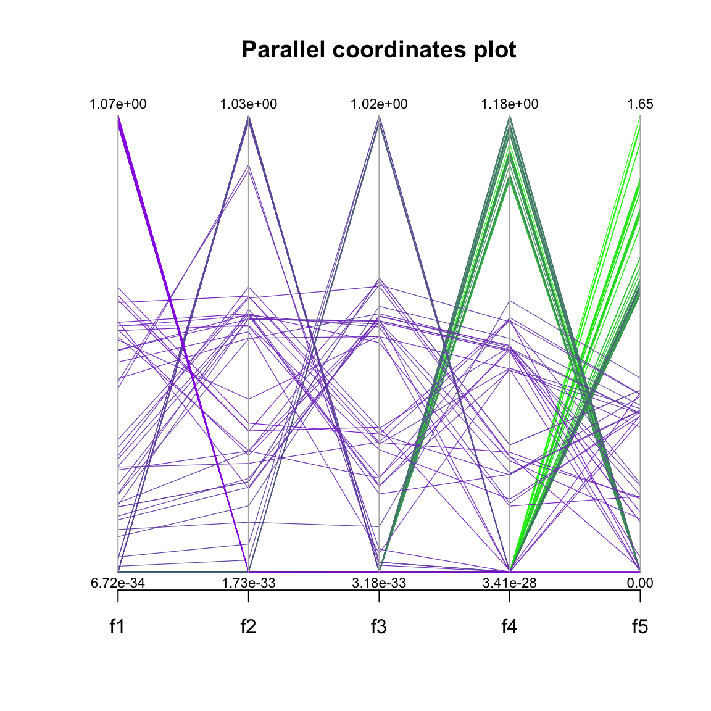

Basic Usage of the MOEADr Package
Claus Aranha, Felipe Campelo
2022-11-05
Source:vignettes/Basic_Usage.Rmd
Basic_Usage.RmdWe use MOEADr to optimize a simple 2-objective problem composed of the Sphere function and the Rastrigin function in \(X = \{x_1,x_2,\dots,x_D\} \in\mathbb{R}^D\).
Setting up the Target Problem:
For this example, we define the sphere and rastrigin function in \(\mathbb{R}\) as: \[ \text{sphere}(X) = \sum_{i=1}^D x_i^2\\ \text{rastrigin}(X) = \sum_{i=1}^D (x_i^2 - 10 \text{cos}(2\pi x_i) + 10) \] Their R implementation is as follows. Because both functions have the optimum at the zero, we apply a simple displacement on the input parameters to make the output of the example problem more interesting.
sphere <- function(X) {
X.shift <- X + seq_along(X)*0.1 # displace input parameters
sum(X.shift**2) }
rastringin <- function(X) {
X.shift <- X - seq_along(X)*0.1 # displace input parameters in the opposite direction
sum((X.shift)**2 - 10 * cos(2 * pi * X.shift) + 10) }The MOEADr package requires the multi objective problem to be defined as a function that receives the entire solution set as a matrix, and return the objective values also as a matrix. For details see the Problem Definition vignette. We will achieve this requirement by wrapping the sphere function and the rastrigin function as follows:
problem.sr <- function(X) {
t(apply(X, MARGIN = 1,
FUN = function(X) { c(sphere(X), rastringin(X)) }
))
}Finally, we need to create a problem definition list that specifies the number of objectives, and the minimum and maximum parameter values for each dimension:
Setting up MOEADr
To load the package and run the problem using the original MOEA/D variant, we use the following commands:
library(MOEADr)
results <- moead(problem = problem.1,
preset = preset_moead("original"),
showpars = list(show.iters = "none"),
seed = 42)The moead() function requires a problem definition (discussed in the previous section) and an algorithm configuration (in this case, an algorithm preset, and optional changes to the preset), logging parameters, and a seed. The preset_moead() function can output a number of different presets based on combinations found on the literature. In this example, preset_moead(“original”) returns the original MOEA/D configuration, as proposed by Zhang and Li (2007)1. You can get a list of available presets by running:
preset_moead()
#> name x description
#> 1 original | Original MOEA/D: Zhang and Li (2007), Sec. V-E, p.721-722
#> 2 original2 | Original MOEA/D, v2: Zhang and Li (2007), Sec. V-F, p.724
#> 3 moead.de | MOEA/D-DE: Li and Zhang (2009)
#>
#>
#> Use preset_moead("name") to generate a standard MOEAD compositionVisualizing the results
The moead() function returns a list object of class moead, containing the final solution set, objective values for each solution, and other information about the optimization process. The MOEADr package uses S3 to implement versions of plot() and summary() for this object.
plot() will show the pareto front for the objectives, as in the figure below. When the number of objectives is greater than 2, a parallel coordinates plot is also produced (see the next example). summary() displays information about the number of non-dominated and feasible solution points, the estimated ideal and nadir values (when available), and (optionally) the IDR and hypervolume yielded by the feasible, nondominated set.
summary(results)
#> Warning: reference point not provided:
#>
#> using the maximum in each dimension instead.
#> Summary of MOEA/D run
#> #====================================
#> Total function evaluations: 20100
#> Total iterations: 200
#> Population size: 100
#> Feasible points found: 100 (100% of total)
#> Nondominated points found: 100 (100% of total)
#> Estimated ideal point: 33.383 125.323
#> Estimated nadir point: 82.107 450.632
#> Estimated HV: 11894.41
#> Ref point used for HV: 82.10675 450.6322
#> #====================================
plot(results, suppress.pause = TRUE)A more complex example
The smoof package2 provides generators for a large number of single and multi objective test functions. The MOEADr package provides a wrapper (function make_vectorized_smoof()) to easily convert smoof functions to the format required by the moead() function. The code snipped below generates a MOP with five objective functions from smoof, and the necessary problem definition for moead().
library(smoof)
#> Warning: package 'smoof' was built under R version 4.2.2
#> Loading required package: ParamHelpers
#> Warning: package 'ParamHelpers' was built under R version 4.2.2
#> Loading required package: checkmate
DTLZ2 <- make_vectorized_smoof(prob.name = "DTLZ2",
dimensions = 20,
n.objectives = 5)
problem.dtlz2 <- list(name = "DTLZ2",
xmin = rep(0, 20),
xmax = rep(1, 20),
m = 5)In this example we will also show how to modify an algorithm preset. Because of the higher number of objectives, we want to reduce the value of the parameter \(H\) in the decomposition component SLD used by the preset from 100 to 8:
results.dtlz <- moead(problem = problem.dtlz2,
preset = preset_moead("original"),
decomp = list(name = "SLD", H = 8),
showpars = list(show.iters = "dots"),
seed = 42)
#>
#> MOEA/D running: ....................Notice on the figure below that MOEADr plots extra information when the number of objectives in a problem is greater than 2:
summary(results.dtlz)
#> Warning: reference point not provided:
#>
#> using the maximum in each dimension instead.
#> Summary of MOEA/D run
#> #====================================
#> Total function evaluations: 99495
#> Total iterations: 200
#> Population size: 495
#> Feasible points found: 495 (100% of total)
#> Nondominated points found: 272 (54.9% of total)
#> Estimated ideal point: 0 0 0 0 0
#> Estimated nadir point: 1.073 1.038 1.025 1.355 1.735
#> Estimated HV: 1.930944
#> Ref point used for HV: 1.073331 1.037972 1.024785 1.35537 1.734524
#> #====================================
plot(results.dtlz, suppress.pause = TRUE)
Note that for more complex MOPs, the preset values suggested by preset_moead() might not be effective. For example, the standard value of 100 for \(H\) in the SLD component is appropriate for 2 objectives, but exceeds the available memory for \(m > 3\). Therefore, we strongly recommend that the user explore the meta-parameter space. The next case study shows one way to perform this task semi-automatically.